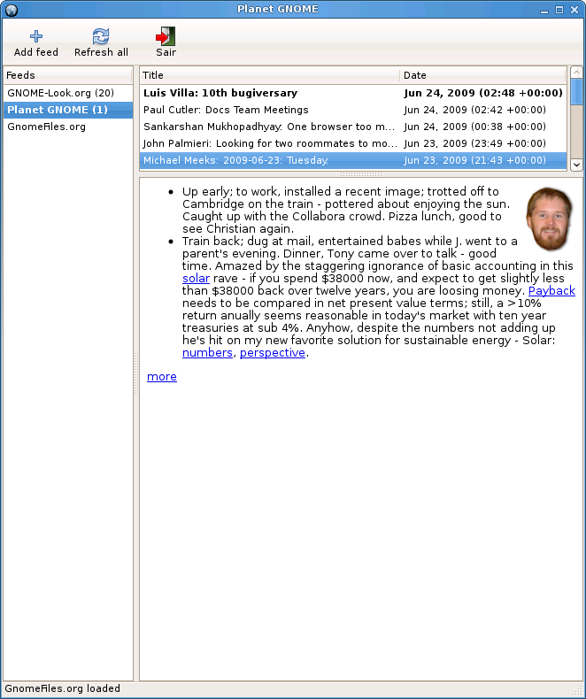

PDF version
PDF version
For the last few years, I have been working at INESC TEC – an institute that does both academic research and industry development. I have been doing both machine learning and computer vision, working in TensorFlow, PyTorch, and OpenCV.
I have just completed my Ph.D. in Computer Science (june 2021). During the Ph.D., I have been serving a few hours per week as a Teacher Assistant at the Faculty of Engineering, University of Porto, helping teach Python and C++. In 2021, I was awarded the Pedagogy Award based on student feedback.
Education
-
2016–2021 | Ph.D. in Computer Science
University of Porto, Minho and Aveiro (joint degree)
-
Thesis title: Re-thinking a Deep Learning Pipeline for Images
-
Supervisors: Jaime S. Cardoso and Joaquim F. Pinto Costa
-
12 publications, 1 best paper award
-
2013–2015 | MSc in Mathematical Engineering
Faculty of Sciences, University of Porto
-
Graduated with honors: 18 out of 20 points
-
2009–2012 | BSc in Computer Science
Faculty of Sciences, University of Porto
-
Graduated with honors: 16 out of 20 points
Work Experience
-
Oct. 2015–Jul. 2021 | INESC TEC
Machine Learning SpecialistINESC TEC is an R&D institute whose headquarters are located in Porto. I collaborated in the following projects:
-
2020--2021 CadPath.AI: high-performing computing plataform in collaboration with IMP for molecular diagnosis of cancer cells
-
2018--2020 CLARE: low-cost mobile device for cervical cancer diagnosis in collaboration with Fraunhofer
-
2015--2017 NanoSTIMA: medical machine learning systems, in collaboration with CINTESIS, FMUP and IBMC
-
Internal awards
-
2021 march: outstanding recognition award
-
2018 sept: outstanding recognition award
-
Sept. 2018–Aug. 2021 | FEUP
Teacher Assistant (part-time)
-
Teaching Python (EIC0005) and C/C++ (EIC0012) for MIEIC
-
2021: received FEUP pedagogic award, voted by students
-
Mar.–Jul. 2015 | Flykt StartupI was involved in a non-successful startup whose goal was to search for travel destinations. I was involved in the NLP part.
-
Sept. 2014–Feb. 2015 | Research Grant
Mathematics Center of the University of PortoResearch on epidemiological models: from differential equations to stochastic simulations and cellular automata.
Open-Source
-
2017 | Avito NLP competition @ Kaggle
Bronze award for results and silver award for engagement -
 2010 | Apoo, a virtual machineI helped with the development of Apoo (together with Profs Rogério Reis and Nelma Moreira), a virtual machine that is currently being used to teach Assembly. Apoo is written in Python and GTK+.
2010 | Apoo, a virtual machineI helped with the development of Apoo (together with Profs Rogério Reis and Nelma Moreira), a virtual machine that is currently being used to teach Assembly. Apoo is written in Python and GTK+.
-
2009 | EatFeed
RSS/Atom reader written in C++ and GTK+ -
2006 and 2007 | Google Summer of Code
-
2007: LibreOffice dynamic layouts (C++)
-
2006: YaST port from GTK+ to Qt (C++)
-
2005 | J2ME and Android gamesGames written in Java Mobile Edition; more recently, I ported a couple of them to Android.
-
2005 | SuperTux, co-authorWhile in high-school, I was part of the initial team developing this game. It is written in C++, SDL, and OpenGL.
Publications
-
2021 | Ordinal Losses for Classification of Cervical Cancer Risk
T. Albuquerque, R. Cruz, J. Cardoso. PeerJ Computer Science -
2021 | Background Invariance by Adversarial Learning
R. Cruz, R. Prates, E. Filho, J. Costa, J. Cardoso. 25th International Conference on Pattern Recognition (ICPR), IEEE -
2019 | Automatic Augmentation by Hill Climbing
R. Cruz, J. Costa, J. Cardoso. 28th International Conference on Artificial Neural Networks (ICANN), Springer -
2019 | Averse Deep Semantic Segmentation
R. Cruz, J. Costa, J. Cardoso. 41st Engineering in Medicine and Biology Conference (EMBC), IEEE -
2019 | Insulator visual non-conformity detection in overhead power distribution lines using deep learning
R. Prates, R. Cruz, A. Marotta, R. Ramos, E. Filho, J. Cardoso. Journal Computers & Electrical Engineering, Springer -
2018 | A Class Imbalance Ordinal Method for Alzheimer's Disease Classification
R. Cruz, M. Silveira, J. Cardoso. 2018 International Workshop on Pattern Recognition in Neuroimaging (PRNI), IEEE -
2018 | Binary ranking for ordinal class imbalance
R. Cruz, K. Fernandes, J. Costa, M. Pérez Ortiz, J. Cardoso. Journal Pattern Analysis and Applications, Springer -
2018 | Deep image segmentation by quality inference
K. Fernandes, R. Cruz, J. Cardoso. International Joint Conference on Neural Networks (IJCNN), IEEE -
2017 | Constraining type II error: building intentionally biased classifiers
R. Cruz, K. Fernandes, J. Costa, J. Cardoso. International Work-conference on Artificial Neural Networks (IWANN), Springer -
2017 | Fine-to-coarse ranking in ordinal and imbalanced domains: an application to liver transplantation
M. Pérez-Ortiz, K. Fernandes, R. Cruz, J. Cardoso. International Work-conference on Artificial Neural Networks (IWANN), Springer -
2017 | Combining ranking with traditional methods for ordinal class imbalance
R. Cruz, K. Fernandes, J. Costa, M. Pérez-Ortiz, J. Cardoso. International Work-conference on Artificial Neural Networks (IWANN), Springer -
2017 | Ordinal class imbalance with ranking
R. Cruz, K. Fernandes, J. Costa, M. Pérez-Ortiz, J. Cardoso. Iberian conference on pattern recognition and image analysis (Ibpria), Springer -
2016 | Tackling class imbalance with ranking
R. Cruz, K. Fernandes, J. Costa, J. Cardoso. International Joint Conference on Neural Networks (IJCNN), IEEE